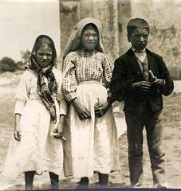
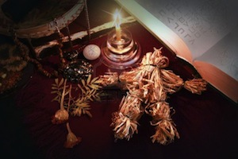

Beginning on May 13, 1917, it is said that Our Lady of Fatima (title for the Virgin Mary) began to appear to three children who were herding sheep. Our Lady of Fatima made 6 consecutive appearances on the 13th day of the month. During the apparitions visits to the children, the Virgin Mary would tell the children secrets of what was to come in the world. The children were encouraged by the apparition to do penance and acts of reparation as well as to make personal sacrifices in order to save the souls of sinners.
As word quickly spread, it was claimed that the Virgin Mary would appear one final time so that everyone could see and everyone would believe. This came to be known as the Miracle of the Sun. Crowds gathered of approximately 70,000 people to witness the miracle. Amongst the believers in the crowd, were reporters and photographers, believers and non-believers alike gathered to witness the miracle.
Although accounts vary from person to person, it is clear that all 70,000 people witnessed something very unusual happening with the sun. Scientists in other parts of the country and the world registered nothing unusual. After a canonical inquiry, the visions of Fatima, were officially declared "worthy of belief" in October 1930.
One of the children, Lucia Santos, documented all of the encounters and secrets that the Virgin Mary told the children. Young Lucia provided the secrets only to the church, despite the children being imprisoned by the anti-clerical freemasons and being interrogated. The children were even threatened with being boiled in oil if they did not divulge the secrets, yet they never faltered.
To this day, people travel to Fatima from around the world to pray and see where the miracles took place. Over the years the Vatican has released the secrets that were told to the children, although there is a great deal of speculation that the final secret (which was delayed in its release by 40 years), is either not the true secret, or is incomplete. At one point the Vatican stated it would remain forever sealed.
The tiny village of Fatima has been forever transformed, and is now as well known as Lisbon, and has become the pride of Portugal.

Surprisingly there is a well known, though not spoken of presence of witchcraft in Portugal. It is not uncommon for villagers to go to the local witch for healing, either for themselves or for a family member who is not responding to more traditional treatments. It is not unusual for witches to have a coessential or familiar animal. It is believed that these animals have a shared connection to the witch. The coessential or familiar of the witch, is just as feared and respected as the witch, for it is believed that should something happen to the animal, it is as though it is happening to the witch and the consequences could be great.
Clearly not sanctioned by the church, most Portuguese people will deny even the existence of witches in Portugal, that is until they feel like they need one. Wives will visit the witch to seek a curse against a woman who she feels is flirting with her husband. Men of the village will seek the help of a witch if an ailment has struck the livestock, or their crops are suffering.
Perhaps not surprisingly those that serve as witches are greatly respected, although that respect tends to come from fear of being cursed if the witch is not treated favorably.